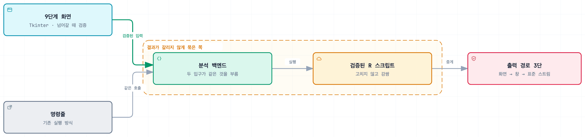

WGBS 유전체 분석 자동화 프로그램
유전체 분석 절차를 GUI로 묶은 프로그램
Impact
- 창 하나로 9단계명령줄 9단계 분석을 Tkinter 화면으로코딩을 안 하는 연구자가 순서대로 실행
- 설치 없이 실행portable R과 methylKit까지 한 폴더에Python·R이 없는 Windows PC에서 바로 동작
- STEP 9 끝까지한 번도 끝난 적 없던 영역 요약을 완료한 분석이 실패해도 나머지는 계속 실행
- 노트북 화면 맞춤사용 피드백 3건 반영1366×768에서 STEP 9 입력 화면 23% → 63% 표시
Background
WGBS 분석은 명령줄에서 단계마다 실행하는 9단계 절차였습니다.
정작 돌릴 사람은 프로그래밍을 하지 않는 연구자였고, 하나라도 틀리면 끝까지 가서야 알았습니다.
Architecture

Contributions
화면에서 단계 순서를 고정
단계를 넘길 때 입력을 검증해, 몇 시간짜리 분석을 돌리기 전에 오류를 거릅니다.
검증된 코드는 고치지 않고 감싸기
분석 코드를 고치면 검증을 다시 해야 합니다.
콘솔 출력을 화면 로그로 중계하고, 긴 연산은 백그라운드 스레드로 돌립니다. 진행 막대도 로그 줄을 세어 채웁니다.
Troubleshooting
창이 뜨기도 전에 꺼진다
- 문제
- 콘솔 없는 실행 파일이 오류 창 없이 바로 종료
- 원인
- 콘솔이 없으면
sys.stdout이None. 출력 코드가 화면보다 먼저 예외를 냄. 오류 보고마저 tkinter에 기댐 - 해결
- 보고 경로를 3단으로. tkinter 창 → Windows 메시지 박스 → 표준 스트림
- 결과
- 어느 단계에서 실패해도 이유가 화면에 보임
STEP 9가 중간에서 멈춘다
- 문제
- 영역 요약에서 멈춰 PCA까지 가지 못함
- 원인
- 독립된 분석 6개를 하나로 이어 돌려 첫 예외가 나머지를 막음. 영역 요약 R 스크립트만 GenomeInfoDb를 불러오지 않음
- 해결
- 분석마다 따로 실행하고 실패는 기록. 빠진 패키지 로드
- 결과
- 기준 결과에도 없던 영역 요약이 16초에 완료